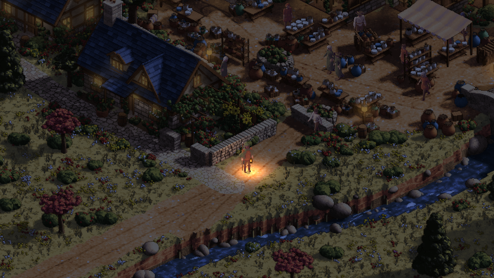

Day 31: a traveller’s lantern
A traveller’s lantern is working in Sprawl’s playable traced towns and countryside. Its warm light follows you down the road, reaches nearby surfaces and stays with you when a house opens to reveal its rooms. The feature is ready for review.
22 October 2026

The request was to choose something worth being proud of: one feature you could point to and say, “that is in my game”. We chose the traveller’s lantern, then built it into the playable scenes.
There is a particular feeling we want from the roads between Sprawl’s settlements. An inn means more when you have travelled through the dark to find it. A lane becomes a place when its stone wall, flowers and old timber emerge from the light you are carrying. The lantern gives the player a small piece of that world to carry with them.
The picture above comes from the actual game engine. The implementation is on its feature branch awaiting review; it has not yet joined the approved game build.
A warm light you take with you
The lantern starts equipped. Press B to put out its light or bring it back, and N to compare the night and day views. Walk away and the light follows your character. Its flame varies gently, while the lantern sways with movement.
The warm colour reaches the traveller as well as the ground nearby. It leaves the wider landscape in its night-time colours, so there is still a road ahead to discover.
Inside a traced house, the same lantern works with the room cutaway. The walls and roof that have opened for the player also change the scene the light uses. This keeps the illumination connected to the room you are actually standing in.
The scenery has depth behind its painted view
Sprawl’s traced towns and countryside retain the distance and height of their visible surfaces. The lantern uses that information to place its warmth in the landscape.
Two things that look close together in the picture can stand far apart in the world. A roof above the traveller, a wall beside them and a path below their feet need different treatment. The light considers that distance and the direction each surface faces, preserving the scenery’s painted colour beneath its warmth.
The moving light also works separately from landscape preparation. Walking changes the position of the lamp without asking the whole town or countryside view to be painted again. When a new view arrives, the lantern picks up that view’s depth information.
What worked in the game
We tested the controls through actual engine input in both the county and a traced town. The checks covered switching the lantern off and on, walking, keeping the lamp attached to the traveller, changing day and night, and installing a different countryside view. The town run also entered a real room and checked the new cutaway.
Both runs passed their focused lantern checks. Separate rendering checks confirmed that switching the light off preserves the original image in the tested cases, including the character, and that a wall facing away receives no direct light.
These captures and checks used Godot with software rendering. They establish that the feature runs in the game and that the tested behavior works. They do not establish its frame rate on a player’s computer or phone.
What still needs work
This first version belongs to the county and the traced town scenes. The older town drawing paths, including the default Oakwell view, do not yet use it.
The light reads the surfaces visible in the scene. It does not have a complete account of hidden walls and objects from which to cast physically complete shadows. The lantern also needs a more deliberate carrying pose, with the hand properly following its handle.
Those are clear next steps. What we have now is a working piece of the journey: a traveller, a dark road, and a warm light that goes with them.